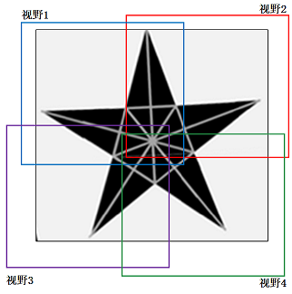
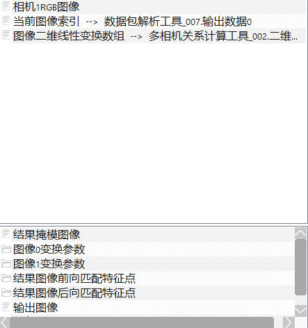
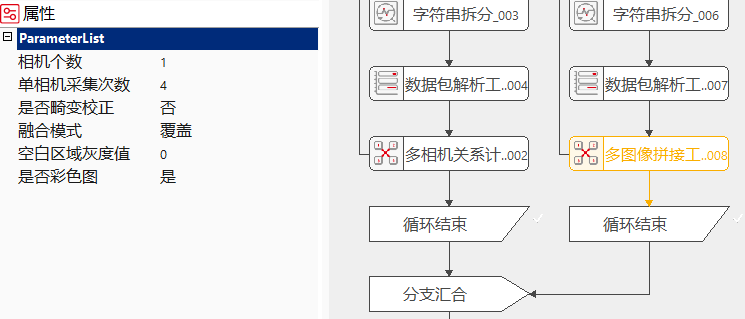
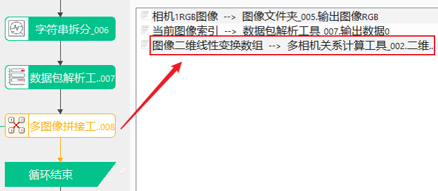
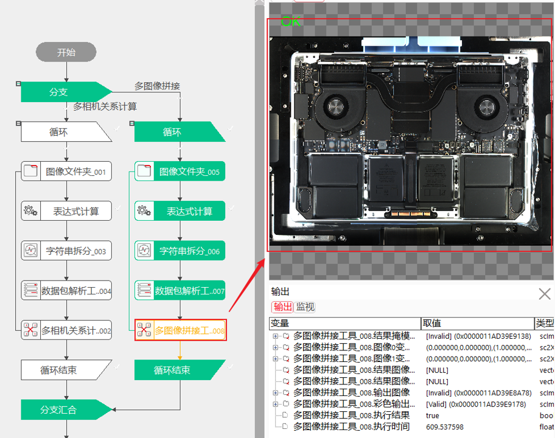
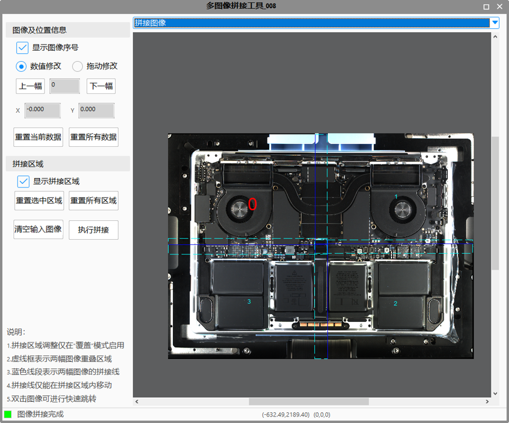
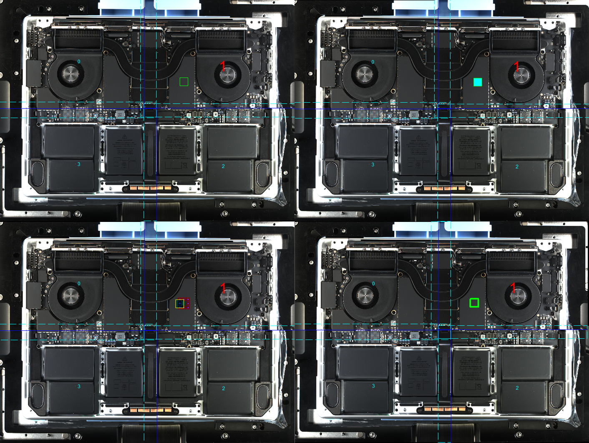
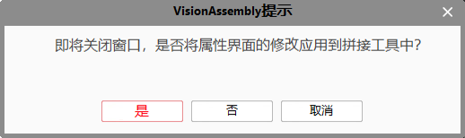

Ghép ảnh là kỹ thuật tổng hợp nhiều ảnh kích thước nhỏ của cùng một cảnh, có vùng chồng lấn nhất định, thành một ảnh lớn liền mạch có độ phân giải cao. Các ảnh này có thể được thu nhận ở các thời điểm khác nhau, góc nhìn khác nhau hoặc từ các cảm biến khác nhau.
Do trường nhìn và độ phân giải của camera ma trận vùng có giới hạn, đôi khi một camera đơn lẻ có thể không đáp ứng được yêu cầu trường nhìn lớn, khổ ảnh lớn. Khi đó cần ghép các ảnh do nhiều camera thu nhận, có thể sử dụng công cụ ghép nhiều ảnh.

Chức năng của ghép ảnh là kết hợp nhiều ảnh thành một ảnh kết quả. Khi ghép cần xem xét chế độ đặc trưng khớp giữa nhiều ảnh, ở đây có hai chế độ đặc trưng: một là biến đổi tuyến tính 2D tương ứng của ảnh（biến đổi ảnh đầu vào sang hệ tọa độ khách hàng chung, bao gồm xoay, co giãn, tịnh tiến）; hai là các điểm đặc trưng tương ứng giữa các ảnh đầu vào. Trong quá trình ghép ảnh, đối với vùng chồng lấn trong nhiều ảnh, sử dụng các thuật toán hòa trộn khác nhau để xử lý. Thuật toán hòa trộn chính là tính giá trị mức xám của pixel trong vùng chồng lấn.





Hiển thị số thứ tự ảnh
Bằng cách tích chọn tùy chọn này, có thể hiển thị/ẩn số thứ tự của ảnh con trong ảnh kết quả ghép, như hình minh họa. Số thứ tự ảnh tương ứng với giá trị chỉ mục được hiển thị bằng font màu đỏ và phóng to, số thứ tự ảnh không phải giá trị chỉ mục được hiển thị bằng font màu xanh da trời và không phóng to.
Sửa đổi bằng giá trị số
Thông qua tùy chọn này, cho phép người dùng sửa đổi dữ liệu tịnh tiến của các ảnh khác ngoài ảnh đầu tiên trong ô chỉnh sửa dữ liệu tịnh tiến. Phạm vi giá trị sửa đổi một lần nằm trong khoảng -100 ~ 100, khi chênh lệch giữa giá trị người dùng nhập và giá trị ban đầu quá lớn, hệ thống sẽ hiển thị hộp thoại nhắc người dùng và đổi giá trị đó về giá trị ban đầu.（Ghi chú: Do các ảnh khác lấy ảnh đầu tiên làm chuẩn, nên không cho phép sửa đổi dữ liệu tịnh tiến của ảnh đầu tiên, giá trị của nó luôn là 0，0。
Sửa đổi bằng kéo thả

Thông qua tùy chọn này, cho phép người dùng sửa đổi dữ liệu tịnh tiến bằng cách kéo hình chữ nhật đặc trưng. Logic sửa đổi dữ liệu tịnh tiến của chế độ này tương tự chế độ giá trị số, mỗi lần chỉ cho phép người dùng kéo trong phạm vi -100 ~ 100. Khi phạm vi kéo quá lớn, hệ thống sẽ hiển thị hộp thoại nhắc người dùng và khôi phục vùng hình chữ nhật về vị trí trước khi kéo.
Mô tả thao tác như hình minh họa. Khi chọn sửa đổi bằng kéo thả, khung hình chữ nhật đặc trưng sẽ hiển thị trong vùng xem. Người dùng cần kéo khung hình chữ nhật đến vùng chứa đặc trưng muốn di chuyển, sau đó nhấp vào vùng kích hoạt bên trong vùng hình chữ nhật. Khi đó hình chữ nhật sẽ ở trạng thái tô đầy, biểu thị người dùng đã kích hoạt chức năng sửa đổi giá trị bằng kéo thả. Sau đó người dùng có thể kéo hình chữ nhật này đến vị trí mục tiêu cần trùng khớp. Trong quá trình kéo, trạng thái tô đầy của vị trí ban đầu và vị trí thời gian thực đều sẽ chuyển sang bán trong suốt, giúp người dùng xác nhận vị trí mục tiêu. Sau khi hoàn tất kéo, công cụ sẽ tự động tính lượng sai lệch giữa vị trí ban đầu và vị trí mục tiêu, cập nhật giá trị này vào ô chỉnh sửa giá trị số, sau đó hoàn tất ghép ảnh.
Ghi chú: Sau khi bật chức năng này, mỗi lần hoàn tất kéo thả đều sẽ tự động thực hiện ghép ảnh. Sau khi hoàn tất kéo thả, người dùng hãy quan sát thông tin nhắc trên thanh thông báo, đợi ghép hoàn tất rồi mới thực hiện thao tác khác.
Ảnh trước/Ảnh sau
Thông qua hai nút này, có thể xem dữ liệu tịnh tiến của giá trị chỉ mục tương ứng.
Hiển thị vùng ghép
Bằng cách tích chọn tùy chọn này, có thể hiển thị/ẩn vùng ghép trong ảnh kết quả ghép, như khung chữ nhật nét đứt màu xanh da trời và đoạn thẳng màu xanh lam trong hình minh họa. Trong đó khung chữ nhật nét đứt màu xanh da trời là vùng chồng lấn của các ảnh liền kề, đoạn thẳng màu xanh lam là vị trí đường ghép của hai ảnh liền kề. Đường ghép chỉ cho phép di chuyển trong vùng chồng lấn. Khi người dùng kéo đoạn thẳng ra ngoài vùng chồng lấn, nó sẽ được đặt lại về mép của vùng chồng lấn.
Nút đặt lại
4 nút đặt lại có thể đặt lại dữ liệu tương ứng theo đúng ý nghĩa tên gọi của chúng. Mỗi lần nhấp nút đặt lại, hệ thống đều sẽ bật hộp thoại nhắc để xác nhận với người dùng có muốn đặt lại dữ liệu hay không, nhằm tránh người dùng vô tình nhấp nhầm. Trong đó “Đặt lại dữ liệu hiện tại” và “Đặt lại toàn bộ dữ liệu” dùng để đặt lại dữ liệu tịnh tiến của ảnh, “Đặt lại vùng đã chọn” và “Đặt lại toàn bộ vùng” dùng để đặt lại vùng ghép của các ảnh liền kề.
Xóa ảnh đầu vào
Nhấp nút này sẽ xóa ảnh đầu vào.
Thực hiện ghép ảnh
Khi người dùng lần đầu vào giao diện thuộc tính nâng cao, hoặc sau khi sửa đổi giá trị của một số dữ liệu, có thể nhấp nút này để xem ảnh kết quả ghép.
Đóng cửa sổ

Khi người dùng đóng giao diện thuộc tính nâng cao, nếu đã sửa đổi giá trị của một số dữ liệu, hệ thống sẽ bật hộp thoại nhắc như hình minh họa, hỏi người dùng có áp dụng các sửa đổi trong giao diện thuộc tính vào công cụ chính hay không. Khi người dùng nhấp “Có” thì cửa sổ sẽ đóng và các sửa đổi sẽ được cập nhật vào công cụ chính; khi người dùng nhấp “Không” thì cửa sổ sẽ đóng nhưng các sửa đổi trong giao diện thuộc tính sẽ không được cập nhật vào công cụ chính; khi người dùng nhấp “Hủy” thì giao diện thuộc tính sẽ không đóng.
| Mô tả hiện tượng | Phương pháp xử lý |
|---|---|
| Ghép ảnh sai lệch rõ ràng | Kiểm tra thứ tự ảnh đầu vào trong chuỗi dữ liệu có nhất quán với thứ tự ảnh đầu vào khi hiệu chuẩn hay không. |
| Ghép ảnh bị lệch nhẹ | Vào giao diện thuộc tính để điều chỉnh dữ liệu tịnh tiến tương ứng của ảnh, nguyên nhân hình thành thường gặp được mô tả bên dưới bảng. |
| Ghép ảnh thất bại | Sửa đổi theo thông tin báo lỗi của công cụ, trường hợp thường gặp là số lượng ảnh và số lượng giá trị trong mảng biến đổi tuyến tính 2D không bằng nhau |
Giải thích nguyên nhân lệch khi ghép
1）Kết quả hiệu chuẩn có sai số. Phương pháp kiểm tra vấn đề này là bật chức năng ghép ảnh của “Công cụ tính toán quan hệ đa camera”, tức là đặt “Có thực hiện ghép ảnh hay không” trong thanh thuộc tính của nó thành Có, sau đó thực hiện lại toàn bộ quy trình hiệu chuẩn. Sau khi hoàn tất hiệu chuẩn, kết quả ghép ảnh của target sẽ được xuất ra trong vùng xem result của công cụ. Người dùng xác nhận có tồn tại lỗi hiệu chuẩn hay không thông qua kết quả ghép ảnh của target.
2）Mặt phẳng tạo ảnh của ảnh ghép thời gian thực không cùng độ cao với mặt phẳng tạo ảnh của target khi hiệu chuẩn. Do khi thực hiện hiệu chuẩn camera, target sẽ được đặt trên một bàn gá phẳng, nhưng độ cao của bàn gá này và mặt phẳng tạo ảnh của sản phẩm khi ghép thời gian thực không nhất thiết giống nhau, dẫn đến kết quả hiệu chuẩn không thể biểu thị chính xác quan hệ chuyển đổi không gian thực tế giữa các camera khác nhau. Đồng thời, trong các kịch bản ứng dụng ghép ảnh thường gặp（ví dụ kiểm tra lỗi bo mạch chủ IMAC có trường nhìn siêu lớn）, các mặt phẳng tạo ảnh khác nhau của vật thật thường tồn tại hiện tượng cao thấp không bằng phẳng, cũng sẽ khiến kết quả hiệu chuẩn trong mặt phẳng 2D không thể biểu thị chính xác quan hệ chuyển đổi giữa các không gian 3D, từ đó dẫn đến tình trạng lệch nhẹ giữa các ảnh ghép.
| Tên tham số | Mô tả tham số |
|---|---|
| Số lượng camera | Số lượng camera hỗ trợ, phạm vi là 1~16 |
| Số ảnh/camera | Số lượng ảnh được mỗi camera thu nhận, phạm vi là 1~16, khi số lượng camera là 1 thì giá trị này tối thiểu là 2 |
| Có hiệu chỉnh méo hay không | Có thực hiện hiệu chỉnh méo cho ảnh đầu vào hay không |
| Loại hiệu chỉnh | Thuộc hiệu chỉnh méo, xác định loại hiệu chỉnh méo, khi hiệu chỉnh méo là Có thì hiển thị tham số này |
| Có cắt ảnh hay không | Thuộc hiệu chỉnh méo, khi chọn Có và loại hiệu chỉnh là hiệu chỉnh méo ống kính thì hiển thị tham số này |
| Có xoay hay không | Thuộc hiệu chỉnh méo, khi chọn Có và loại hiệu chỉnh là hiệu chỉnh méo phép chiếu và ống kính thì hiển thị tham số này |
| Chế độ hòa trộn | Khi thực hiện ghép ảnh, chế độ xử lý thuật toán cho vùng chồng lấn của hai ảnh |
| Giá trị mức xám vùng trống | Vùng không được ảnh con phủ trong ảnh kết quả ghép sẽ được lấp đầy bằng giá trị này, phạm vi là 0~255 |
| Có phải ảnh màu hay không | Khi chọn Có, hỗ trợ ghép ảnh màu |
| Bật tính toán song song | Có bật tính toán song song hay không. Khi chọn Có, thuật toán sẽ bật phương thức tính toán song song OpenMp, có thể nâng cao tốc độ tính toán, nhưng có thể xuất hiện tình trạng thời gian xử lý không ổn định. Khi chọn Không, thuật toán sẽ tắt tính toán song song OpenMp. |
| Phần trăm số luồng | Thiết lập phần trăm số luồng của tính toán song song, phạm vi hợp lệ là (0, 0.75]，tương ứng biểu thị phạm vi phần trăm (0%, 75%]. |
| Tên tham số | Mô tả tham số |
|---|---|
| Ảnh camera 1~16 | Liên kết ảnh do camera 1~16 thu nhận, khi là ảnh xám thì hiển thị tham số này |
| Ảnh RGB camera 1~16 | Liên kết ảnh do camera màu 1~16 thu nhận, khi là ảnh màu thì hiển thị tham số này |
| Chỉ mục ảnh hiện tại | Dùng để nhận dạng ảnh đầu vào hiện tại là ảnh thứ mấy do camera thu nhận |
| Mảng kết quả hiệu chuẩn target-camera | Liên kết kết quả hiệu chuẩn target-camera, dùng để thực hiện hiệu chỉnh méo ảnh, khi bật hiệu chỉnh méo thì hiển thị tham số này |
| Mảng biến đổi tuyến tính 2D của ảnh | Liên kết mảng biến đổi tuyến tính 2D do “Công cụ tính toán quan hệ đa camera” xuất ra, dùng để biểu thị quan hệ chuyển đổi không gian giữa các ảnh |
| Tên tham số | Mô tả tham số |
|---|---|
| Ảnh đầu ra | Lấy ảnh sau khi ghép. |
| Đầu ra ảnh màu | Khi chọn Có ở Có phải ảnh màu hay không, xuất ảnh con được cắt từ ảnh màu. |
| Kết quả thực thi | Kết quả thực thi của công cụ. |
| Thời gian thực thi | Thời gian thực thi của công cụ. |
参见“\Samples\多图像拼接工具.gvp”。